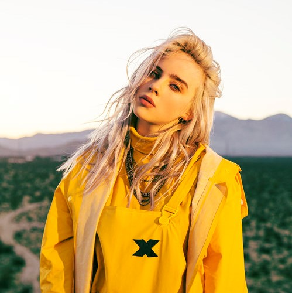

24,712,833 Monthly Listeners

Billie Eilish
About Artist
16-year-old global pop-phenom Billie Eilish is on the fast track to becoming one of the biggest stars to emerge since the release of her debut single “ocean eyes.” Fast forward from her humble breakout, Billie’s debut EP has since amassed more than 750 million combined streams worldwide and singles “ocean eyes" and “lovely (with Khalid)” have both been certified RIAA GOLD in North America. She has consistently sold out headlining tours across the globe and is currently making waves with her latest single “you should see me in a crown,” garnering more than a million combined streams in the first 24 hours upon release. Billie Eilish is currently working on her debut album and will be hitting the festival circuit this summer, with more headlining dates to be announced very soon.